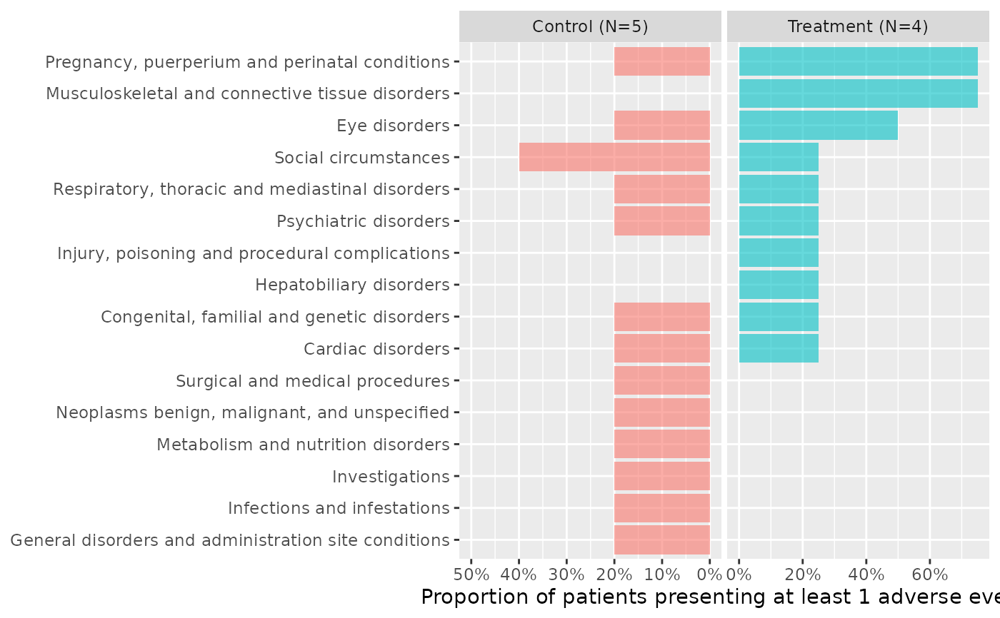
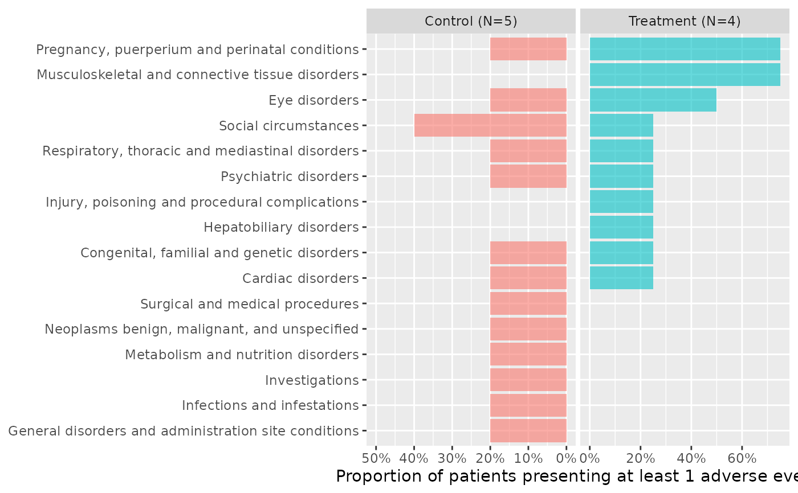

Produces a graphic representation of AEs by CTCAE SOC.
Usage
butterfly_plot(
df_ae,
...,
df_enrol,
severe = NULL,
sort_by = c("total", "severe"),
range_min = NULL,
arm = "ARM",
subjid = "SUBJID",
soc = "AESOC"
)
ae_plot_soc(df_ae, ..., df_enrol, severe, sort_by, range_min, arm, subjid, soc)Arguments
- df_ae
adverse event dataset, one row per AE, containing subjid, soc, and grade.
- ...
unused
- df_enrol
enrollment dataset, one row per patient, containing subjid (and arm if needed). All patients should be in this dataset.
- severe
name of the logical column in
df_aetelling whether an AE is severe. Case-insensitive.- sort_by
either "total" or "severe"
- range_min
The minimum value for the upper limit of the x-axis range. Set to
1to always include 100%.- arm
name of the treatment column in
df_enrol. Case-insensitive. Can be set toNULL.- subjid
name of the patient ID in both
df_aeanddf_enrol. Case-insensitive.- soc
name of the SOC column in
df_ae. Case-insensitive. Grade will be considered 0 if missing (e.g. if patient if absent fromdf_ae).
See also
ae_table_grade(), ae_table_soc(), ae_plot_grade(), ae_plot_grade_sum(), butterfly_plot()
Examples
tm = grstat_example(N=100)
attach(tm, warn.conflicts=FALSE)
ae2 = ae %>%
dplyr::mutate(serious = sae=="Yes")
butterfly_plot(ae2, df_enrol=enrolres, range_min=0.5)
 butterfly_plot(ae2, df_enrol=head(enrolres,9), range_min=0.5)

ae2 %>%
butterfly_plot(df_enrol=enrolres, severe="serious") +
ggplot2::labs(caption="Darker areas represent Serious Adverse Events")
butterfly_plot(ae2, df_enrol=head(enrolres,9), range_min=0.5)

ae2 %>%
butterfly_plot(df_enrol=enrolres, severe="serious") +
ggplot2::labs(caption="Darker areas represent Serious Adverse Events")